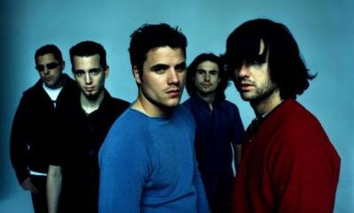

El canto del loco
Banda española de pop rock creada en 1994

Integrantes del grupo
- Dani Martín
- Chema Ruíz
- David Otero
Discografía
Grandes éxitos de El Canto del Loco
| Año |
Disco |
| 2002 |
A contracorriente |
| 2003 |
Estado de ánimo |
| Zapatillas |
2005 |
| 2008 |
Personas |
| El disco más vendido fue Zapatillas |
Sitio Web oficial
Esta es la página oficial del grupo